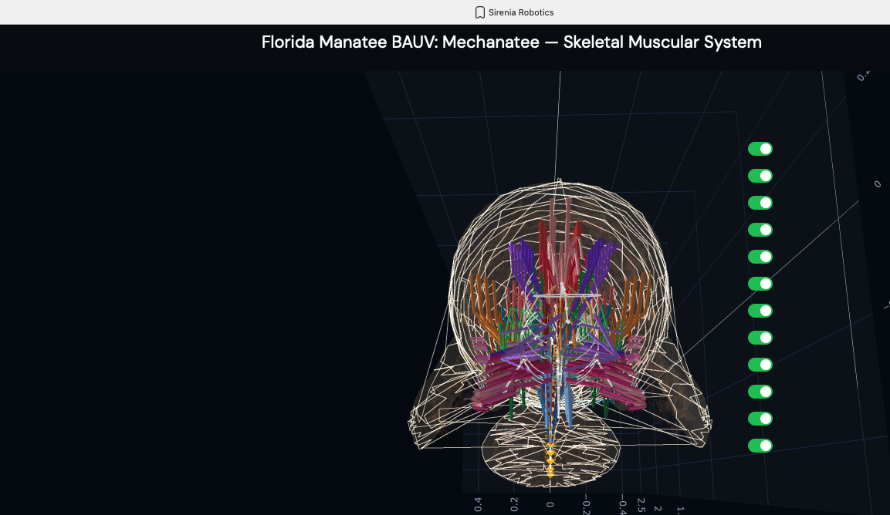

Sirenia Systems reverse-engineers the musculoskeletal architecture of the order
Sirenia — dugong and manatee — to build autonomous underwater vehicles
that replicate biological locomotion at the level of individual muscle fibers,
vertebral geometry, and hydrodynamic force production.
The Mechanatee uses a hybrid sirenian reference model: musculature from the dugong
(Dugong dugon, Domning 1977) mapped onto the vertebral column and fluke geometry of
the Florida manatee (Trichechus manatus latirostris). Both species share the same
fundamental locomotor architecture — dorso-ventral undulation driven by antagonistic
epaxial/hypaxial muscle chains — but diverge in caudal segment count, fluke morphology,
and shoulder architecture.
Dugong (Dugong dugon)
Fluke: Lunate (crescent-shaped), cetacean-like. Higher aspect ratio. Swimming: More specialized, greater endurance. Open-water habitat. Musculature: More developed hypaxial system. Separate SVL/SVM divisions.
"Fluke elevator" tendons present. Greater transverse flexibility. Source: Domning (1977), Smithsonian Contributions to Zoology No. 226.
57 pages, 54 figures, 2 tables. The most complete published sirenian myology.
Manatee (Trichechus manatus)
Fluke: Spatulate (paddle-shaped). Lower aspect ratio. Thrust via pitching. Swimming: Less specialized, less endurance. Protected-water habitat. Musculature: Transversospinalis better developed relative to longissimus.
Shorter neural spines, larger metapophyses, longer centra. Less anatomical specialization
for swimming — but more maneuverable in restricted waters. Source: Murie (1872, 1880), Kojeszewski & Fish (2007).
Manatee — Five-Panel Anatomical Layover
Five progressive layers from outer envelope to skeleton. The envelope (panel 1) is
regenerated at runtime from the current muscle and skeletal reconstruction.
Nervous system routed using comparative cetacean and sirenian neuroanatomy
(Reep, Morgane, Marshall, Pabst); musculature follows the dugong-derived Domning (1977) map;
skeleton is the real manatee STL.
Generated by manatee_anatomy_layover.py. Hybrid sirenian model —
muscles are dugong-derived (Domning 1977), skeleton is manatee.
Dugong — Full-Body Musculature (Domning 1977)
The definitive anatomical reference for sirenian musculature. Skin thickness distribution,
lateral dermal muscles, and dorsal superficial/deep layer dissection of Dugong dugon.
Domning (1977), Figures 1–3.
Top: Skin thickness along dorsal (D), lateral (L), and ventral (V) midlines (8–18 mm range).
Middle: Lateral view — dermal muscles and superficial aponeuroses with CuT, SpC, and platysma divisions.
Bottom: Dorsal view — superficial layer (right side), deeper layer with splenius, longissimus capitis,
and shoulder muscles removed (left side).
Anatomical plates from Domning (1977) revealing the layered musculature of the posterior
trunk and tail through progressive dissection — from superficial skin muscles down to the
deepest vertebral attachments. Each layer informs actuator placement in the Mechanatee.
Shoulder & back detail. Epaxial chain (LnD, IlT, transversospinalis) with
rib cage, scapular muscles, and neural spine attachments. Green: abdominal core.
Pink: superficial sheet (CuT). The full dorsal extensor system that drives the upstroke.
Flipper & pectoral detail. 30 forelimb muscles (15 per side) including
extrinsic shoulder group, intrinsic arm/forearm, and hand musculature.
Position control system — not propulsion (Reidenberg 2018).
Dorsal view. Bilateral symmetry of the muscle system with nerve/vessel
pathways (white traces) running between the pectoral flippers. 50 vertebrae
visible through the semi-transparent envelope.

Posterior (caudal) view. Frontal cross-section perspective showing
the concentric layering of muscle groups around the vertebral column — the same
architecture that the HASEL actuator array replicates.
Exterior Geometry & Swim Sequence
Textured beauty render. Dragon Skin silicone outer body with Sharklet-inspired
antifouling microtexture. Visual indistinguishability target: juvenile manatee at 5 m
in turbid water.
Eight-frame swim sequence. Body posture sampled across one full dorso-ventral
undulation cycle. Travelling-wave kinematics with quadratic amplitude envelope.
Orthographic multi-view. Side, top, front, and 3/4 perspectives.
Domning (1977) — Smithsonian Contributions to Zoology No. 226
Sirenian Muscle Encyclopedia
Complete myological reference for the order Sirenia, derived from Domning's dugong dissection
and cross-referenced with Murie (1872, 1880) manatee descriptions. 57 pages, 54 figures,
2 tables. Every muscle mapped to its Mechanatee actuator equivalent.
Anatomy Source Caveat — Read First
Muscle nomenclature and fiber descriptions below follow the dugong
(Dugong dugon) dissection by Domning (1977). The skeleton and fluke
in the Mechanatee are manatee (Trichechus manatus). This is a
deliberate, disclosed hybrid — no equivalent peer-reviewed manatee musculature dissection
of comparable detail exists. Quantifying where dugong→manatee homology breaks down is
itself part of the research roadmap.
Swimming Muscles — The Propulsive System
"Sirenians can, apparently by contraction of diagonally opposite sacrococcygeus ventralis
lateralis and longissimus muscles, oscillate their tail fins about the long axis of their
bodies." — Domning (1977), p. 29. Forward motion is initiated by an upstroke.
Epaxial System — Upstroke (Dorsal Extension)
The epaxial muscles of the Sirenia are characterized by extensive fusion, obscuring most of
the divisions easily observed in land mammals. The extreme shortening of the neck, loss of hind
limbs, and fusion of trunk and tail regions creates a single continuous epaxial muscle mass from
occiput to tail tip.
LnD
M. longissimus dorsi
Principal epaxial mass. Continuous unit from atlas to end of tail. Fleshy and tendinous
on transverse process of atlas; at C6 attachment fused with iliocostalis.
Origin: fleshy from dorsal sides of transverse processes, first thoracic back into flukes,
dorsolateral sides of neural arches from T1 back, and dorsal sides of all ribs
inside their angles. Inserts via separate round tendons to aftermost caudals.
Upstroke — Primary
SeC
M. semispinalis capitis
Short, shallow longitudinal cleft on surface of muscle at about atlas level. Posteriorly
continuous with undifferentiated epaxial mass. Undifferentiated short muscle fascicles and
tendons spanning ≤4 vertebrae. Fleshy attachments to dorsal side of transverse process of atlas.
Upstroke — Medial
IlT
M. iliocostalis thoracis
Least developed of the epaxial systems. Single unit, no pelvis attachment. Long narrow band,
widest (5.5 cm) at 9th rib. Lateral to longissimus, covering ribs just distal to their angles.
Pinnate fiber bundles with overlapping tendons. Tendons with fibers insert on posterolateral
sides of ribs, 4–5 forward of origin.
Upstroke — Lateral
Hypaxial System — Downstroke (Ventral Flexion)
The large epaxial and hypaxial locomotor muscles are supplemented in the dugong by an unusual
development of the subcutaneous muscles (cutaneus trunci). This consists of a thick mass on the
underside of the tail, connected to the ischium by a separate "ischiococcygeus," continuous with
the abdominal sheet. "Its action is clearly to flex the tail." — Domning (1977), p. 29.
SVL
Sacrococcygeus ventralis lateralis
Primary downstroke muscle. Broad, triangular cross-section with aponeurosis.
From caudal transverse process tips and ribs 17–19. Deep to cutaneus trunci.
Originates from ventrolateral processes of caudal vertebrae.
Downstroke — Primary
SVM
Sacrococcygeus ventralis medialis
Deep to SVL, from lateral sides of chevron bones. More oblique fiber arrangement.
Works in concert with SVL for powerful ventral flexion.
Downstroke — Deep
FH
M. flexor haemalis
Along chevron bone tips, increasing posteriorly. Flexes the tail ventrally (downstroke).
Lever arm of ventral caudal flexor system. Attaches to hemal arches of caudal vertebrae.
Downstroke — Lever
Isc
M. ischiococcygeus
Fleshy from ventromedial edge of ischium and distal end of ilium. Runs medially and
posteroventrally parallel to pelvis. In manatee attached to first two chevron bones.
Extends from ischium (pelvis) to tail via deep aponeurosis.
Downstroke — Pelvic
CuT
Cutaneus trunci
Subcutaneous sheet from axilla to fluke base. Thick caudal mass unique to sirenians.
"Its action is clearly to flex the tail" (Domning 1977). In the manatee, the caudal
extension is much less developed. Dorsal fibers sweep up to mingle with
auricularis profundus.
Downstroke Assist
RA
M. rectus abdominis
Ventral support along underside, sternum to ischium. Flexes spine for downstroke assistance.
Broad, flat muscle along ventral midline providing sustained ventral flexion force.
Downstroke Assist
Lateral System — Steering & Yaw Control
SDL
Sacrococcygeus dorsalis lateralis
Lateral division of epaxial mass at transverse process tips. Produces lateral flexion
of caudal peduncle for yaw steering. Works with Intr for turning maneuvers.
Lateral — Yaw
Intr
Intertransversarius coccygeus
Long fusiform muscle, 2nd lumbar to tail tip. Deep bundles (Intrd) between
individual transverse processes for fine tail adjustments. Both superficial and deep
divisions present. Essential for precise low-speed maneuvering.
Fine Control
LaD
M. latissimus dorsi
Broad, superficial. Wraps around dorsal side, fused posteriorly with CuT.
Swimming direction control and lateral trunk stabilization.
Structural
Core Stability & Abdominal System
OAI
Obliquus abdominis internus
Trunk rotation and spine stabilization. Partially wraps tail. Deep to OAE.
Stabilization
OAE
Obliquus abdominis externus
Pinnate segments on ribs 3–19, directed posteroventrally. Core compression.
Forelimb Musculature — Position Control, Not Propulsion
30 forelimb muscles (15 per side). Per Reidenberg (2018, Encyclopedia of Marine Mammals):
"These muscles are used by sirenians for slow ambulation along the riverbed, but are
not particularly strong… reduced in cetaceans as they use the flippers primarily for
adjusting swimming position and braking, but not propulsion."
Trp / LaD / Rh
Extrinsic Dorsal Group
Trapezius, latissimus dorsi, rhomboideus. Dorsal thorax to scapula/humerus.
In dugong, serratus magnus is divided into separate anterior/posterior parts.
Shoulder
PMa / PMi / D
Extrinsic Ventral + Shoulder
Pectoralis major/minor, deltoid, supraspinatus, infraspinatus, teres major, subscapularis.
Manatee bicipital groove absent; no separate heads.
Shoulder
ECR / FCR / FDP
Forearm & Hand
Extensors (ECR, ECU, EDC, EDQ), flexors (FCR, FCU, FDP, FDS), pronator teres,
palmaris longus, interossei, AbD V. Digits II–V present in both species.
Flipper
Structural & Sensory Elements
Chevron Bones (ch)
V-shaped bones on ventral side of caudal vertebrae. Protect blood vessels, serve as
FH and SVM attachment points. 9–13 per tail.
Caudal Vertebrae (Ca)
24–29 vertebrae. Central axis of movement. Ball-and-socket facet joints for
controlled pendulum-like oscillation.
Diaphragm
Unusually large, muscular, and horizontally oriented in sirenians. Functions in
buoyancy control as well as respiration. The manatee diaphragm is the most
horizontally positioned of any mammal.
Complete Muscle Abbreviation Index
Abbrev.
Muscle
Group
Domning Fig.
LnD
Longissimus dorsi
Upstroke
3, 22–24, 49–52
IlT
Iliocostalis thoracis
Upstroke
3, 22–24, 49
SeC
Semispinalis capitis
Upstroke
3, 12–15, 20–24
FH
Flexor haemalis
Downstroke
51
SVL
Sacrococcygeus vent. lat.
Downstroke
49–52
SVM
Sacrococcygeus vent. med.
Downstroke
51
Isc
Ischiococcygeus
Downstroke
52–54
Abbrev.
Muscle
Group
Domning Fig.
RA
Rectus abdominis
Assist
23, 24, 49–53
CuT
Cutaneus trunci
Assist
2, 3, 49–52
OAI
Obliquus abd. internus
Stabilization
34, 50, 52
TrA
Transversus abdominis
Stabilization
50–54
Intr
Intertransversarius
Fine control
3, 49–53
LaD
Latissimus dorsi
Structural
22, 32, 46–47
ReI
Retractor ischii
Structural
53–54
Source: Domning, D.P. (1977). "Observations on the myology of Dugong dugon (Müller)."
Smithsonian Contributions to Zoology, No. 226. Cross-referenced with
Murie (1872, 1880) manatee descriptions and Reidenberg (2018) Encyclopedia of Marine Mammals.
Ocean Engineering Mathematics
The Physics of Biomimetic Underwater Locomotion
From Navier-Stokes to Lighthill, from Strouhal to coupled neural oscillators —
every equation governing the Mechanatee's hydrodynamic performance, derived from
first principles and validated against biological kinematic data.
Swimming Kinematics — Progressive Wave Model
Manatee swimming is classified as subcarangiform: dorso-ventral undulation propagating as a
traveling wave from peduncle to fluke tip. Kinematic parameters from Kojeszewski & Fish (2007).
At cruise: St = 0.416 × 0.275 / 0.8 = 0.143. Below the 0.20–0.40 optimal band
(Taylor, Nudds & Thomas 2003). Manatees are low-St swimmers.
Reduced Frequency
k = πfc / U
Quantifies unsteady effects on the fluke; c = 0.28 m (fluke chord).
Thrust, Drag & Navier-Stokes
Friction Drag (ITTC 1957)
FD = ½ρU²SwetCD
CD = 0.075 / (log10Re − 2)² ≈ 0.0065 at cruise.
Swet = 2.2 m². FD ≈ 4.7 N.
Lighthill Thrust (Elongated Body Theory)
T = ½ma(L) · w(L,t)² − recoil terms
ma(L) = ρπb² = 340 kg/m. At cruise: T ≈ 24.1 N vs. drag FD ≈ 4.7 N.
Added Mass (Elliptical Cross-Section)
ma(x) = ρ · π · b(x)²
b(x) = local half-height. Varies from ~0.25 m mid-body to ~0.003 m at fluke trailing edge.
Total Bending Moment at Joint j
Mtotal,j = ∑k=j+1N (mk + ma,k) · ak · rjk
Peak Mtotal ≈ 122.4 N·m at proximal caudal joint (x = 1.456 m).
Strouhal sweep: propulsive efficiency vs. St. Mechanatee at St ≈ 0.14.
Annotated flow field with thrust, drag, and reactive force components.
Mechanatee in the swimmer design space. Operating at St ≈ 0.14 —
below the canonical 0.20–0.40 efficiency band. The low-Strouhal niche of slow, quiet,
vegetated-water survey.
Force Vector Analysis
Distributed reactive & resistive forces during dorso-ventral tail undulation.
Per-segment force decomposition: inertial, pressure, and net thrust.
Lift generated through active fluke pitch modulation — SMA-driven real-time pitch.
Total bending moment: inertial + hydrodynamic components across speed range.
Central Pattern Generator — Spinal Drive Architecture
The tail is driven by a network of coupled neural oscillators — not an open-loop sine wave.
Same architecture validated by Ijspeert et al. on Salamandra robotica, adapted for sirenian
dorso-ventral undulation.
Dorsal (epaxial) fires for θi ∈ [−π/2, π/2];
ventral (hypaxial) fires for the antagonistic half-cycle.
Drive-Signal → Behavior
Behavior
Drive
Kinematics
Station-hold
ν0 = 0
Tail flaccid, trimmed
Cruise (0.8 m/s)
ν0 = 0.42 Hz
Symmetric DV, peak ηp
Slow turn
ΔνL/R ≠ 0
Asymmetric amplitude
Surface/dive
ΔRU/D ≠ 0
DC offset on antagonists
Reverse
φij → −φij
Head-ward wave
Phase-lagged joint-angle profile across 26 caudal segments — the kinematic output
of the coupled-oscillator network.
Why a CPG, Not a Lookup Table
Robustness: Re-entrains to perturbations within one cycle.
Smooth transitions: Cruise → sprint → station-hold → reverse
all expressed as drive-signal changes.
Biological fidelity: Same equations describe lamprey, salamander, dogfish,
and (by homology) sirenian spinal locomotor networks.
Efficiency & Cost of Transport
Froude Efficiency
ηF = U / Vwave = 0.8 / 1.382 ≈ 0.58
Cost of Transport
COT = Ptotal / (mgU) [J/(m·kg)]
Speed
Thrust
Power
ηprop
COT
0.3 m/s
13.2 N
0.15 W
0.72
0.0010
0.5 m/s
17.3 N
0.64 W
0.75
0.0026
0.8 m/s
24.1 N
2.49 W
0.79
0.0065
1.0 m/s
29.5 N
4.25 W
0.81
0.0100
1.3 m/s
39.0 N
9.22 W
0.76
0.0173
1.5 m/s
45.9 N
13.8 W
0.73
0.0231
8-Hour Mission Battery
E = 125 W × 8 h = 1000 Wh → 5.0 kg Li-ion (200 Wh/kg)
Froude efficiency and cost of transport across operating speed range.
Velocity and acceleration profiles — peak ηp at 0.95 m/s matches biological data.
CFD Quad Chart — Biomimetic Wake Comparison
(a) Tuna / Thunniform: Attached boundary layer, narrow wake, high-speed cruising. (b) Squid / Jet: Pulsed vortex rings, high accel, low efficiency. (c) Whale / Cetacean fluke: Dorso-ventral pitching hydrofoil, reverse Kármán street. (d) Eel / Anguilliform: Full-body undulation with distributed thrust. Mechanatee operates between (a) and (c) — subcarangiform with cetacean-style fluke.
The Low-Strouhal Advantage
St ≈ 0.14–0.28 vs. 0.3–0.4 for dolphins. Spatulate fluke generates thrust through
pitching rather than pure heaving. Quieter propulsion, less turbidity —
ideal for coastal/estuarine operations where the vehicle must be invisible to both
wildlife and instrumentation.
Interactive Models
Digital Twin & 3D Visualization
Interactive exploration of the Mechanatee musculoskeletal system — toggle individual
muscle groups, isolate epaxial vs. hypaxial chains, and examine vertebral geometry.
Epaxial System (Upstroke)
M. longissimus dorsi: atlas to tail tip. Transversospinalis and IlT provide medial/lateral
dorsal force. Transmits distally through subdermal connective tissue sheath (Pabst 1996).
Hypaxial System (Downstroke)
SVL primary, with SVM, flexor haemalis (chevron bones), rectus abdominis providing ventral
flexion. CuT caudal mass unique to sirenians adds subcutaneous tail flexion.
Lateral System (Steering)
Intertransversarius and SDL produce lateral bending for yaw control. Transverse process
tips provide precise slow-speed maneuvering in shallow-water environments.